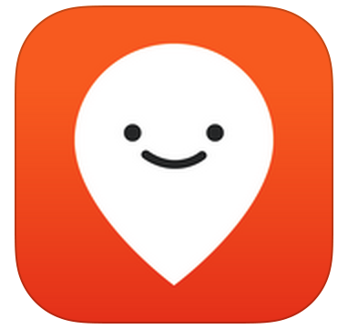
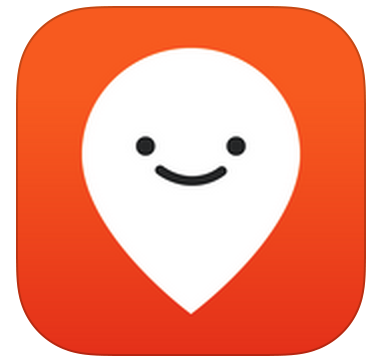

Transit officials have been receiving a mass amount of customer service complaints due to expansion of routes. The numerous bus routes that have been added to the schedule have the same stops at the same bus stop. Public transit riders are having much difficulty navigating the new system; they want to know when the next bus is arriving and how long the ETA is to their respective stop.
To help bus riders better track specific bus and their ETA, a thorough user-centered research and design process was conducted to create a mobile application, BusyBus, to best serve the needs of the consumers. The new transit mobile application solves this specific population’s needs and desire for public transit to and from Washington and State.
The first step of the research process was to conduct a user survey focused on the needs of bus riders. The information gained through this survey was then analyzed to understand the topic of public transit mobile applications’ strengths and weaknesses. Via Google Forms, I surveyed 17 users regarding their experiences with current cloud storage applications.
Participants highlighted inconsistent transit times and inaccurate arrival times, as some of frustrations encountered with public transit regularly. Participants expressed a strong desire for more efficient communication and more vehicles for transportation in order to improve the use of public transit for all users.
Participants highlighted inconsistent transit times and inaccurate arrival times, as some of frustrations encountered with public transit regularly. Participants expressed a strong desire for more efficient communication and more vehicles for transportation in order to improve the use of public transit for all users.
To build a usable, minimum viable product, a competative analysis of two leading competitors in the public transit industry: Moovit and GoogleMaps, was conducted. One of the most widely used transit apps, Google Maps offers real time data with satellite imagery to access the most time efficient routes to their destinations. However, this app requires internet connection, does not suggest detours, and overestimates traffic time which can affect commuter time. A community-driven app, Moovit offers real time data, with consistently updated transit information but only allows users to search within current location while requiring cellular data to filter accurate and update routes for users.With that in mind, the app to be created needed to be geared towards a busy people-students who enjoy balancing hobbies outside academia. What if there was a cloud storage platform that preorganized files and folders for its users to minimize the frustration of self cloud organization?
 

Based on the information gathered from the user surveys and competitive analysis, user stories and user personas were created to highlight the main features of the product. The highest-priority stories focus on activities relating to the bus arrival times and service alerts.
Based on the trends analyzed in my survey, two user personas were created to better personify potential BusyBus users.
High priority items for all users:

Caleb is a 20 year old college student studying Environmental Science and English at Guilfor College in Greensboro, North Carolina. Though Greensboro is a college town, only 16 bus routes run Monday through Friday, ending service after midnight, with only seven routes in use on Sundays, with service ending at 10:30 on weekends. What he finds frustrating is that buses do not stick to their arrival times, do not have more than ten stops in one direction, have large arrival gaps in the evenings, and run every hour on the weekends. He would like a more navigable app that can better assist me in navigating the Greensboro transit system, especially late at night and in inclement weather.
Leah is a 29 year old graduate student pursuing her master's in Social Work at the University of Richmond while also interning part time at Richmond General Hospital. Richmond is a bustling college town. she's either in class, at the social work clinic across town pursuing my internship, or exploring downtown Richmond! Seeing that she's in my first year of school and new to the area, she needs an app that can help me to navigate the city better. If she finds that she is late for class or work, she does not want want to rush to the bus stop only to find she has to wait a great length of time for the bus.
Users flows were developed to outline the users’ journey when navigating the BusyBus app to view the arrival times of their desired bus.

Once I had learned from my research which features were most essetiantial to provide in the BusyBus app, low-fidelity wireframes were sketched in pencil and then translated to a clickable prototype which were tested on potential users.

Three users, each from varying geological locations were tested. Users were told that their location on the map is illustrated by the dot with the circle around it. The first step asked them to perform was to searched their destination. Once they proceeded to the next screen, I then asked them to check arrivals for a specific bus line - 610 South Slope. The users found these tasks straightforward and navigable while providing helpful feedback. All users cited the helpfulness regarding the visibility of the map when viewing the upcoming bus arrival times. One user suggested displaying a real-time animation buses that are out of service or delayed.
Once I had sufficient feedback from testing the black and white lo-fi mockups, it was time to move on to creating the visual design for the app. This screen shows the first iteration of the visual design. The most visual emphasis is placed on the list of upcoming bus arrivals. However, after further testing and review, it was noted that the tab bar did not indicate where users are in the app, the navigation bar needed a back arrow to explain where the icon is taking users in the app, lack of consistency in icon and bus number colors, and the removal of redundant text, such as “arriving at.

Following the minor updates were produced a more navigable and readable mock up of the BusyBus app. The color coding system was refined to help differentiate the status of the bus lines. The active lines are blue, the rerouted lines are red, and the inactive lines are displayed in a deactivated grey state.

Once the visual design was finalized, the final prototype was built out with HTML and CSS. Both a scroll overflow and hover features were added so that the map would stay visible while a user scrolls the list of arriving buses and their respective arrival times.
GitHub Prototype